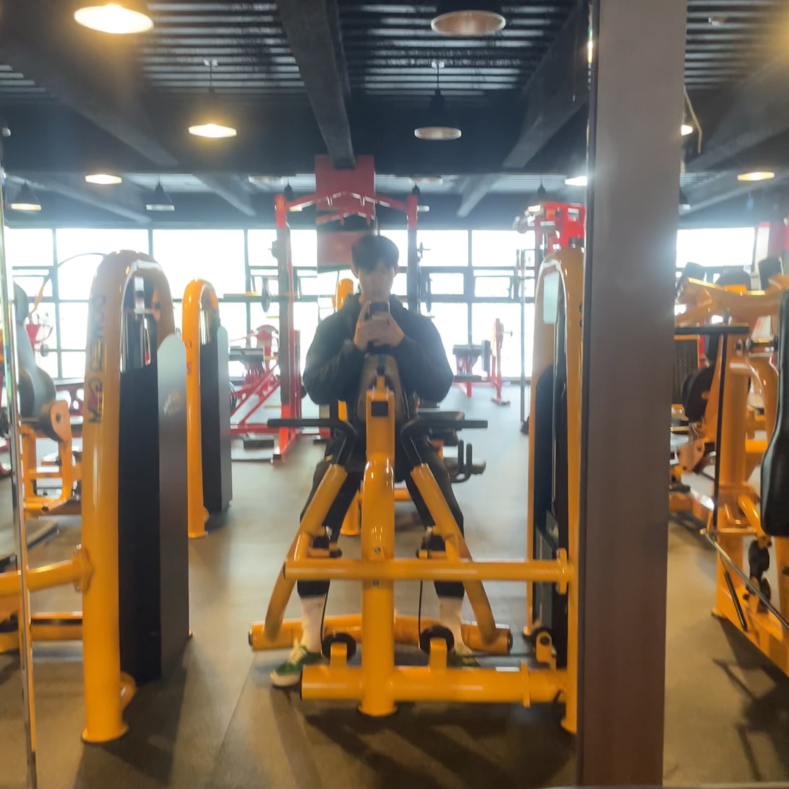

관심분야(취미활동)
운동
운동을 하는 이유
저는 여러 가지 운동을 하는 것을 즐겨합니다. 하지만 부상을 자주 당해 부상 없이 더 건강하게 운동하는 것에 대하여 목적을 두고 있습니다. 운동을 하면 일상생활에서 게을리 행동하는 것을 금하고 부지런해지는 느낌을 받았습니다. 또한 겉모습으로도 건강해지므로 자신감도 상승하는 기분을 받아 좋아하게 되었습니다. 무엇보다도 땀을 흘리며 운동을 하는 것은 스트레스 해소에도 큰 효과를 두어 엔도르핀이 상승하게 되었습니다.
헬스
헬스(웨이트)를 처음 시작해 보았을 때는 2021년 8월경 군 복무를 하고 있을 때였습니다. 골격이 얇아 매우 마른 몸을 지니고 있었는데 선임들을 따라 헬스를 자주 하다 보니 변화하는 몸을 맨눈으로 확인하니 흥미가 생겼습니다. 헬스가 습관화되고 더 많은 중량을 올리기 위한 넘치는 욕심으로 인해 허리를 부상을 당했습니다. 그 후 2개월간 중단하고 다시 시작하였지만 잦은 허리 통증과 함께 2023년 1월 18일 mri 검사 결과 L5 - S1 디스크 탈출증 판정을 받았습니다. 그 후 3개월간 휴식 기간을 거치고 현재는 부상 없고 허리에 부담 없이 헬스하는 방법을 찾고 더욱더 건강한 자세 교정을 하는 것에 관심이 기울어져 있습니다. 허리디스크로 인해 하체운동과 가슴 운동(벤치프레스)은 잠깐 못하고 있지만 허리에 부담 없이 등 운동과 어깨 운동을 하는 저의 루틴에 대하여 설명하겠습니다.
등운동
어시스트 풀업
먼저 전완근에 힘이 있을 때 등 운동의 정석이라 불리는 풀업을 진행해 줍니다. 하지만 광배근에 정확한 자극을 찾기 어렵기 때문에 어시스트 풀업 머신을 이용합니다.
순서
1, 어깨너비보다 넓게 그립을 잡습니다.
2, 다리는 골반 정도 너비로 편하게 위치합니다.
3, 가슴을 열고 양쪽 팔꿈치를 옆구리에 붙여준다는 느낌으로 올라갑니다.
4, 광배근 전체에 힘이 느껴질 정도로 수축이 되었다면 천천히 원래의 자세로 돌아옵니다.
렛 풀 다운
풀업만 계속해서 하기에는 지루하기 때문에 렛 풀 다운도 선택해서 진행하였습니다.
순서
1, 바를 자신의 어깨보다 살짝 넓게 잡아주고 가슴을 위쪽에 향하게끔 들어 올리고 위에 있는 바의 손잡이를 봅니다.
2, 팔꿈치를 내회전한 상태에서 옆구리를 찍는 느낌으로 중심을 뒤쪽으로 누우며 당겨줍니다.
3, 내린 상태에서 올라갈 때는 툭 놓는 것이 아니라 최대한 이완해서 등의 자극을 느끼며 늘려주면서 올라갑니다.
시티드로우 머신
원래는 케이블 시티드로우 머신을 좋아하는데 허리디스크로 인해서 가슴 패드가 있는 시티드로우 머신을 이용해서 진행합니다.
순서
1, 명치 부분을 가슴 패드에 위치시켜 주고 손잡이를 잡아줍니다
2, 의자 높이는 어깨선을 넘지 않게 조절하고 앞뒤 거리는 손잡이를 잡았을 때 등이 충분히 이완되는 거리를 유지해 줍니다.
3, 당길 때 허리가 과하게 꺾이지 않도록 주의하며 자극을 생길 정도로 당겨줍니다.
4, 수축과 이완의 가동 범위를 충분히 가집니다.
체스트 소프트 드로우
허리디스크로 인해 허리를 숙이는 바벨로우를 할 수 없으니 체스트 소프트 드로우를 선택해서 진행하였습니다.
순서
1, 먼저 인클라인 벤치를 형성한 후 8번을 반복 수행할 수 있는 무게로 세팅합니다.
2, 벤치에 가슴을 대고 덤벨을 내립니다.
3, 팔꿈치보다는 어깨를 먼저 당깁니다.
4, 숨을 마시고 팔꿈치 높이는 옆구리까지, 팔꿈치 각도는 90도 정도로 당겨옵니다.
5, 최대로 당긴 지점에서 호흡을 짧게 뱉어줍니다
6, 손이 어깨 아래 위치하도록 내려주면서 숨을 마십니다.
어깨 운동
사이드 레터럴 레이즈
측면 어깨를 타깃으로 사이드 레터럴 레이즈를 진행해 줍니다. 총 7세트에 30회를 진행합니다.
순서
1, 1세트에 30개를 할 수 있는 무게의 덤벨을 선택해 줍니다.
2, 계란을 감싸 쥐듯 잡되 중지 손가락에 힘이 잘 들어가도록 해줘야 합니다.
3, 두 다리는 돌 반 정도의 너비로 벌리고 어깨의 긴장을 푼 뒤 허리를 일자로 바르게 펴줍니다.
4, 양손의 손등이 정면을 바라보도록 골반 앞쪽에 위치해 줍니다.
5, 양손을 천천히 올려주는데 손등을 멀리 날린다. 라는 감각을 가지고 운동을 해줍니다.
6, 팔꿈치는 어깨보다 살짝 아래에 오는 정도까지만 올라갔다가 다시 버티며 내려오는 것을 반복해 줍니다.
리버스 펙덱 플라이
후면 어깨를 타깃으로 플라이 머신을 펙덱 플라이 머신으로 형성한 뒤 진행해 줍니다.
순서
1, 기구에 가슴을 댄 후 기구 쪽을 바라보며 의자에 앉아 줍니다.
2, 엉덩이는 살짝 뒤로 내밀고 가슴을 앞 패드에 기대줍니다.
3, 팔꿈치는 살짝 구부린 상태로 그립을 잡고 크게 원을 그린다는 느낌으로 팔을 뒤로 젖혀줍니다.
4, 후면 삼각근을 타깃으로 하였기 때문에 파을 위로 젖히는 동작에서 팔꿈치가 몸통까지 오지 않아도 되도록 진행해 줍니다.
5, 팔을 뒤로 젖히는 동작에서 호흡을 내뱉고 이완하는 동작에서 호흡을 들이마셔 줍니다.
숄더 프레스 - 덤벨
운동하는 날에 따라 허리 상태를 확인한 후 진행해 줍니다.(벤치에 앉아서 진행하는 운동이니 허리 부상 위험이 높다고 판단)
순서
1, 가슴을 열어준 다음 덤벨을 들어 귀 쪽에 위치시켜 줍니다.
2, 팔꿈치를 피면서 덤벨을 머리 위로 들어 줍니다.
3, 머리 위로 올렸던 덤벨을 다시 처음 위치로 천천히 내려 줍니다.
(주의사항)
- 덤벨숄더프레스를 진행할 때 허리가 꺾이지 않도록 항상 적당한 복압을 주고 진행합니다.
- 덤벨이 너무 옆으로 빠지게 되는 경우 부상에 위험이 있습니다.
- 어깨가 말려있는 라운드 솔더의 체형인 경우 벤치 각도를 살짝 낮추어 덤벨숄더프레스를 진행해 주시는 것이 좋습니다.